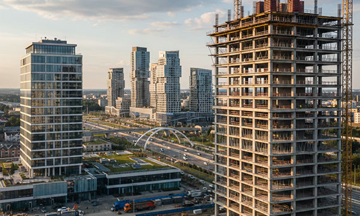

The construction and architecture sectors are the foundations of urban development and infrastructure. In Germany, known for its high building standards and engineering precision, as well as in France, Italy, Switzerland, Austria, Poland, the United Kingdom, Norway, and the Benelux countries, architectural projects demand a balance between functionality and aesthetic integration.
From large-scale residential developments and commercial office towers to public infrastructure and bespoke architectural projects, every building requires a comprehensive identification system. Professional building directories, floor indicators, room number plates, safety instruction signage, technical room markers, fire exit plaques, and engraved brand plates for architectural firms are essential for navigation, safety, and project identity.
At SignXpert, we provide high-quality, durable, and design-oriented labeling and signage solutions for architectural bureaus and construction companies in Germany and across Europe.
The Architectural Sector: Design and Compliance in Germany and Europe
Germany maintains some of the strictest building codes (DIN standards) in the world, requiring precise documentation and identification for every facility. Switzerland and Austria are leaders in high-quality sustainable architecture, while the United Kingdom and France focus on innovative urban regeneration. Poland and the Benelux region are hubs for modern commercial real estate and industrial construction.
In these markets, signage must comply with European safety regulations (EN standards) and accessibility laws (including Braille and tactile requirements). Professional industrial labeling ensures that a building is not only safe and compliant but also intuitive for its occupants.
SignXpert supports architects and contractors primarily in Germany, with fast and reliable delivery to France, Italy, Switzerland, the UK, Norway, Austria, Poland, and the Benelux countries.
Aesthetic Integration: Signage as an Architectural Element
For architects, a sign is more than just information—it is part of the building’s visual language. SignXpert’s materials are chosen to complement modern architectural finishes such as glass, exposed concrete, and brushed metal.
- Premium Finishes: Our two-layer polymers in brushed silver, gold, and matte black provide the sophisticated look of metal with the lightweight and non-corrosive benefits of high-tech plastics.
- Precision Engraving: We ensure that typography and logos are executed with absolute clarity, reflecting the high standards of the architectural bureau or the construction firm behind the project.
- Bespoke Directories: Custom-sized plates for building entrances and elevator lobbies that maintain a consistent design throughout the facility.
Safety and Infrastructure: The Construction Side
On the construction side, durability and speed of installation are paramount. During the "shell construction" (Rohbau) and finishing phases, identifying technical systems is critical for handover to the client.
- Technical Room Markers: Permanent identification for electrical rooms, HVAC centers, and plumbing manifolds that withstand the dust and conditions of a construction site.
- Safety & Fire Signage: Durable, high-visibility plaques for fire hydrants, emergency valves, and electrical shut-off points, ensuring long-term compliance with fire safety audits.
- Project Identity: Engraved "Construction Credits" plaques that name the architects, engineers, and builders, mounted at the building entrance as a lasting mark of professional achievement.
Engineering for Longevity: Adhesion and Weathering
Building signage is exposed to varied conditions—from high-traffic hallways to exterior facades facing wind, rain, and UV radiation. SignXpert utilizes 3M™ High Performance adhesives, ensuring that plates remain securely bonded to stone, metal, or painted surfaces for decades.
Our materials are UV-stabilized to prevent fading and cracking, ensuring that the building’s navigation system remains pristine from the day of handover through years of operation.
Whether it is a luxury apartment complex in Munich, a corporate headquarters in London, or a public school in the Netherlands, our engraved signs and identification plates provide the reliability and professional finish that the European construction industry demands.
Why SignXpert is the Partner of Choice for Architects and Builders
SignXpert is a specialized supplier of architectural signage, building identification plates, technical room markers, and commemorative project plaques.
Our primary focus is the German market, with fast and dependable delivery across France, Italy, Switzerland, the United Kingdom, Norway, Austria, Poland, and the Benelux region.
Through our advanced online editor, architects and project managers can easily design consistent signage sets, select finishes that match their interior palettes, and manage batch orders for entire building complexes.
Choosing SignXpert means investing in a labeling partner that understands the intersection of technical building requirements and high-end design, helping European construction professionals deliver projects that are safe, compliant, and aesthetically flawless.